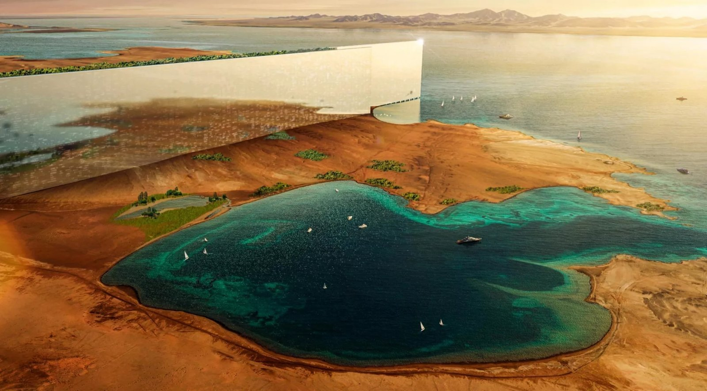
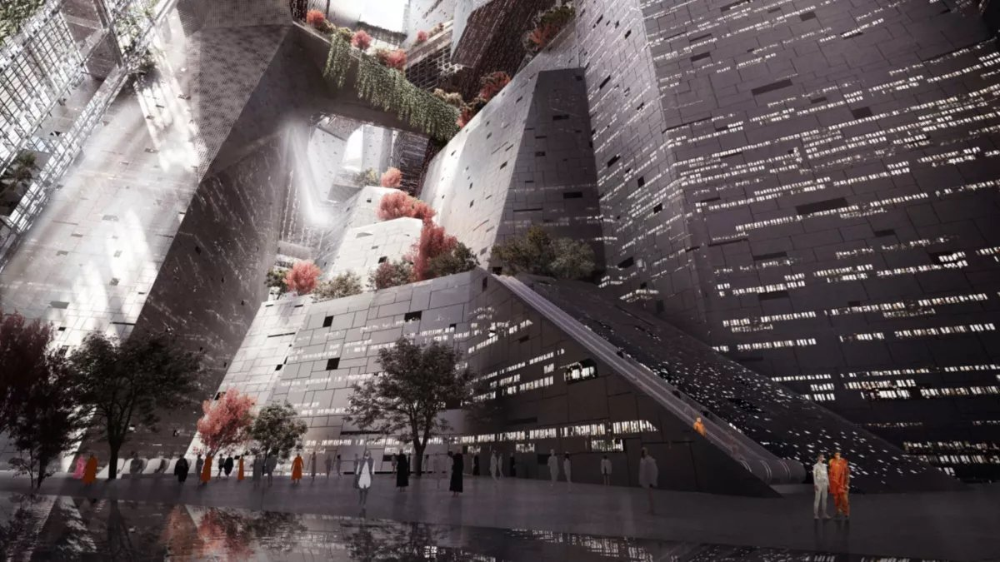
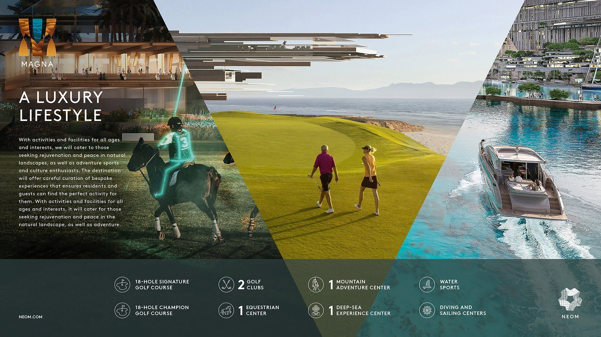
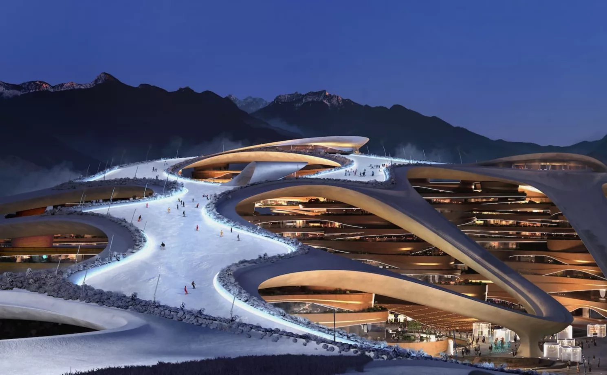

'새로운 미래'를 향한 출범
사우디아라비아의 초대형 미래 도시 프로젝트 '네옴(NEOM)'은 2017년 10월 24일 무함마드 빈 살만 왕세자가 '비전 2030'의 핵심 도시로 공식 발표하며 출범했다. 명칭 '네옴(NEOM)'은 그리스어 NEO(새로운)와 아랍어 Mustaqbal(미래)의 첫 글자 M을 결합한 것으로, 미래 기술과 지속가능성을 실험하는 도시라는 의미를 담고 있다. 도시는 더 라인(THE LINE), 옥사곤(OXAGON), 트로제나(TROJENA), 신달라(SINDALAH), 그리고 신규 해안 관광지 마그나(MAGNA) 등 다섯 개 구역으로 구성되어 있다. 재생 에너지 기반 운영·자율 주행 인프라·AI 도시 관리 시스템을 통해 차세대 도시 모델을 제시하고 있다.

▲ 선형 스마트 시티 '더 라인' 전경 모델 — 출처: 네옴 시티 공식 홈페이지
초기 발표 당시 더 라인은 총 170km에 달하는 초대형 선형도시로 주목을 받았다. 그러나 2024년 이후 공사비 증가와 기술적 난이도 등 현실적 요인이 부각되며, 2025년 현재는 약 2~3km 구간부터 단계적으로 개발하는 방식으로 전환되었다. 반면 옥사곤과 트로제나 등 다른 구역은 계획대로 공사가 진행 중이며, 핵심 목표는 유지되고 있다. 또한 환경 복원과 생태계 보존을 위한 하다드(Hadad) 프로그램이 병행되어 지역 생물다양성과 지속가능한 개발을 함께 추구하고 있다. 신달라와 마그나는 각각 럭셔리 해양 리조트와 자연 유산 관광 벨트를 중심으로 한 지속 가능한 관광 허브로 개발되고 있으며, 네옴은 산업·기술과 더불어 관광과 문화의 중심지를 지향하고 있다.

▲ 산업·물류 중심의 해상 도시 '옥사곤' 전경 모델 — 출처: 네옴 시티 공식 홈페이지

▲ (좌) 럭셔리 관광 도시 신달라 홍해, (우) 마그나 전경 모델 — 출처: 네옴 시티 공식 홈페이지
한국 기업의 참여 확대 — 스마트시티·에너지·디지털 협력
네옴은 글로벌 파트너십을 확대하며 한국 기업들의 참여 또한 활발히 이어지고 있다. 현대 자동차 그룹은 트로제나 지역에서 수소 버스 시범 운행을 완료하며 친환경 모빌리티 기술 적용 가능성을 입증했고, 포스코는 사우디 ACWA 파워와 그린 수소 협력 MOU를 체결했다. 또한 네이버(Naver)는 사우디 주요 도시에서 디지털 트윈 플랫폼 구축 사업을 수주하며 스마트 시티 분야에 본격 진출했다. 2025년 9월에는 한국 중소벤처기업부와 사우디 투자부(MISA)가 AI·바이오 헬스·스마트 시티 분야 스타트업 협력 프로그램을 공식 발표하며, 양국 혁신 기업 교류가 제도화되었다.
문화·기술·관광·스포츠 융복합 도시
네옴 미디어(NEOM Media)는 영화·드라마·게임·디지털 출판 등을 아우르는 통합 콘텐츠 허브를 구축하고 있다. 이 기관은 미디어 빌리지(Media Village) 및 바이다 데저트 스튜디오(Bajdah Desert Studios) 등 제작 시설을 운영하며, 제작비의 최대 40%를 환급하는 현금 인센티브 제도를 도입해 세계 각국의 프로덕션을 유치하고 있다. 또한 2024년 말, 사우디 콘텐츠 기업 하카와티 엔터테인먼트(Hakawati Entertainment)와 최대 9편의 장편 영화 공동 제작 계약을 체결하는 등 중동 미디어 산업의 새로운 거점으로 부상했다. 이러한 인프라는 이미 사우디 필름 커미션과 MOU를 체결한 한국영상진흥원(KOFIC)과 같은 기관이 향후 사우디와 공동제작·로케이션 교류 등을 추진할 수 있는 실질적 기반이 된다. 더불어 트로제나 지역은 중동 최초로 2029년 동계 아시안 게임 개최지로 선정되었으며, 해발 2,400m 산악 지형과 인공 설원 기술을 기반으로 '사막 속 겨울 도시'를 구현할 예정이다.

▲ 산악 관광·스포츠 도시 '트로제나' 전경 모델 — 출처: 네옴 시티 공식 홈페이지
네옴 시티는 이렇게 다양한 프로젝트와 국제 이벤트 등을 통해 스포츠·관광·문화가 융합된 국제 교류의 신흥 무대로 떠오르고 있다.
사진 출처 및 참고자료
네옴 시티 프로젝트 공식 홈페이지, https://www.neom.com
《Setup in Saudi》 (2025. 10. 23). Three Sectors Open to South Korean Investments in Saudi Arabia, setupinsaudi.com
《HYUNDAI》 (2025. 08. 04). Hyundai Motor Group Pioneers Hydrogen Mobility in NEOM to Drive Sustainable Transport, hyundai.com
《Middle East AI News》 (2025. 06. 11). Naver delivers three Saudi smart city digital twins, middleeastainews.com
《Arab News》 (2025. 06. 05). How NEOM is rewilding Saudi Arabia and reviving ancient falconry traditions, arabnews.com
《Reuters》 (2025. 10. 26). Saudi Arabia's Vision 2030 goals 85% complete, says minister, arabnews.com
《NEOM》 (2024. 12. 10). NEOM Media and Hakawati Entertainment to produce nine films, neom.com
아시아 올림픽 평의회(OCA) 공식 홈페이지, https://oca.asia/